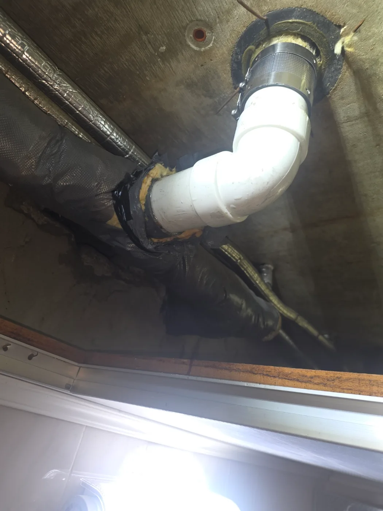
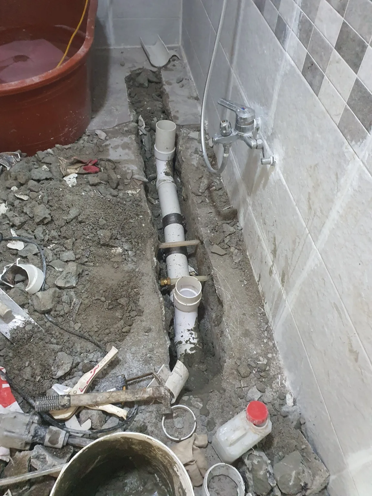
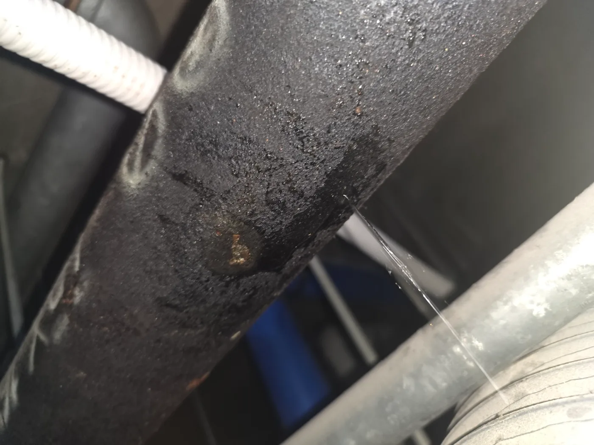
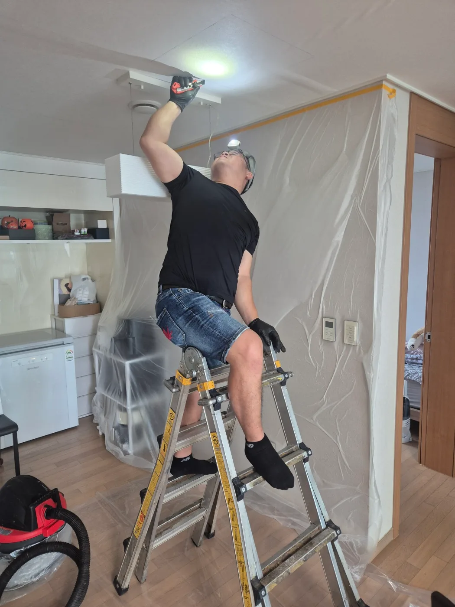
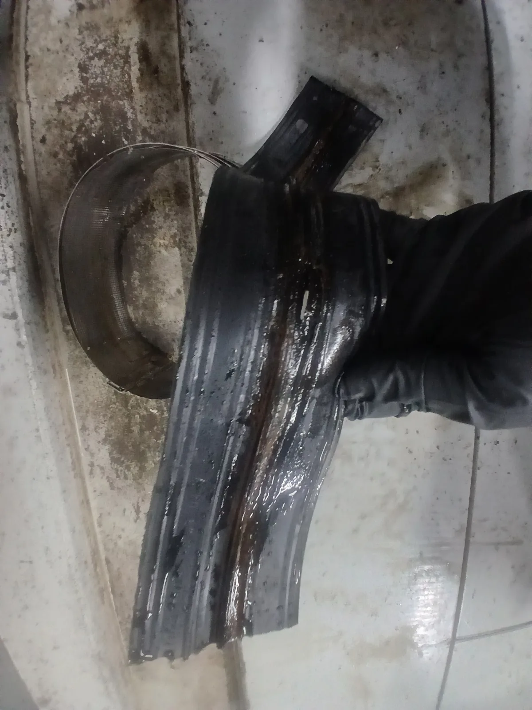

서초구 반포동 배관공사 | 서울 서초구 반포동 하수구막힘 아랫집 누수 노후 트랩
서초구 반포동 배관공사 30년 넘은 아파트에서 발생한 하수배관 막힘과 트랩 누수 신라건축설비가 원인과 교체 필요성을 고객 눈높이로 설명하고
서울 · 경기 · 인천 실제 작업 기록
배관 상태를 확인하고 보수·교체한 실제 공사 기록입니다.

서초구 반포동 배관공사 30년 넘은 아파트에서 발생한 하수배관 막힘과 트랩 누수 신라건축설비가 원인과 교체 필요성을 고객 눈높이로 설명하고

용산구 이촌동 배관공사 공용배관 고압세척과 굴착 진단 후 파손부를 새 배관으로 연결 보강하고 통수검사 및 몰탈 마감

송파구 거여동 배관공사 욕실 바닥을 철거해 몰탈이 굳은 기존 배관을 교체하고 배수 구배를 고려한 신설 배관 통수검사

구로구 구로동 배관공사 빌딩 천장 배관의 누수 지점을 확인하고 손상부에 보강재와 고정 밴드를 체결해 누수 차단

강남구 대치동 배관공사 천장 점검구를 만들고 막힌 에어컨 드레인관을 절단해 석션한 뒤 통수 확인 및 배관 복구

금천구 가산동 배관공사 노후 노허브배관과 손상된 가스켓을 철거하고 새 배관 및 커플링 설치로 누수 구간 복구